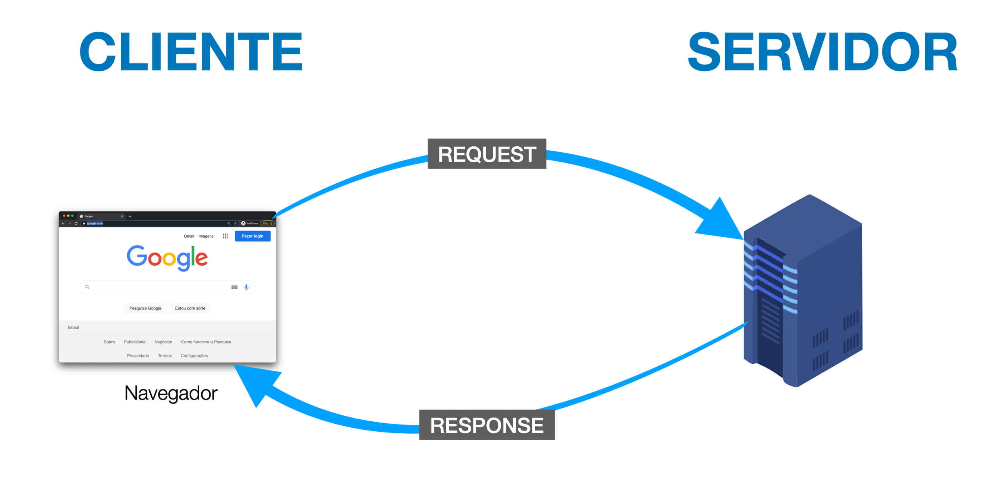
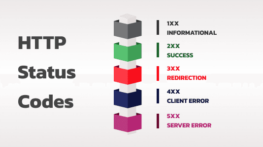

De acordo com o Grupo de Trabalho de Engenharia da Internet (IETF), "O Protocolo de Transferência de Hipertexto (HTTP) é um protocolo de camada de aplicação com a leveza e a velocidade necessárias para sistemas de informação hipermídia distribuídos e colaborativos. É um protocolo genérico, sem estado e orientado a objetos, que pode ser usado para diversas tarefas, como servidores de nomes e sistemas distribuídos de gerenciamento de objetos, por meio da extensão de seus métodos de requisição (comandos). Uma característica do HTTP é a tipagem da representação de dados, permitindo que sistemas sejam construídos independentemente dos dados que estão sendo transferidos." (1996).
Desse modo, o HTTP é um protocolo de comunicação entre cliente e servidor, que permite a transferência de informações na web. Ele funciona através de requisições feitas pelo cliente e respostas enviadas pelo servidor. Cada requisição HTTP contém informações como o método (GET, POST, etc.), o URL do recurso solicitado, cabeçalhos com metadados e, em alguns casos, um corpo de mensagem com dados adicionais. O servidor processa a requisição e retorna uma resposta HTTP, que inclui um código de status, cabeçalhos e o conteúdo solicitado.
A requisição HTTP é composta por uma linha de requisição, cabeçalhos e, opcionalmente, um corpo de mensagem. A linha de requisição inclui o método HTTP (como GET ou POST), o URL do recurso solicitado e a versão do protocolo. Os cabeçalhos fornecem informações adicionais sobre a requisição, como tipo de conteúdo aceito, autenticação e cookies. O corpo da mensagem é usado em métodos como POST para enviar dados ao servidor.

GET /index.html HTTP/1.1
Host: www.google.com.br
User-Agent: Mozilla/5.0 (Windows NT 10.0; Win64; x64)
Accept: text/html,application/xhtml+xml
POST /login.php HTTP/1.1
Host: www.google.com.br
Content-Type: application/x-www-form-urlencoded
Content-Length: 31
usuario=oliver&senha=123456
| Estrutura | Função |
|---|---|
| GET | solicita dados |
| POST | envia dados |
| PUT | atualiza dados |
| DELETE | remove dados |
| /api/dados | URI/caminho do recurso solicitado no servidor |
| HTTP/1.1 | versão do Protocolo utilizada na comunicação |
| Host | nome de domínio do servidor |
| User-Agent | identifica a aplicação/navegador e o sistema operacional do cliente |
| Content-Type | define o formato do conteúdo enviado no body. . Nesse caso: sistema Windows 10/11 de 64 bits executando um navegador baseado no Mozilla/Chrome |
| Content-Length | define o tamanho do corpo da requisição em bytes |
A resposta HTTP é composta por uma linha de status, cabeçalhos e, opcionalmente, um corpo de mensagem. A linha de status inclui o código de status e a versão do protocolo. Os cabeçalhos fornecem informações adicionais sobre a resposta, como tipo de conteúdo, tamanho do conteúdo e cache. O corpo da mensagem contém os dados solicitados pelo cliente, como o HTML de uma página web.

HTTP/1.1 200 OK
Date: Sun, 13 Sep 2026 19:44:18 GMT
Server: gws
Content-Type: text/html; charset=UTF-8
Content-Length: 15400
Cache-Control: private, max-age=0
<!DOCTYPE html>
<html itemscope="" itemtype="http://schema.org/WebPage" lang="pt-BR">
<head>
<title>Google</title>
</head>
<body>
<!-- Código HTML da página inicial do Google -->
</body>
</html>
| Estrutura | Função |
|---|---|
| HTTP/1.1 | versão do protocolo usada na resposta |
| 200 OK | código de Status (Status Code), significando que o pedido deu certo |
| Date | data e hora em que a resposta foi gerada |
| Server | identifica o software do servidor web. O Google usa o GWS (Google Web Server) |
| Content-Type | informa o tipo de conteúdo que está sendo entregue no corpo da resposta (neste exemplo, uma página de texto em formato HTML) |
| Content-Length | o tamanho do corpo da resposta em bytes |
| Cache-Control | instruções para o navegador sobre como guardar essa página em memória cache local |
| Corpo (Body) | contém o conteúdo da resposta, que pode ser um documento HTML, uma imagem, um arquivo de vídeo, entre outros |